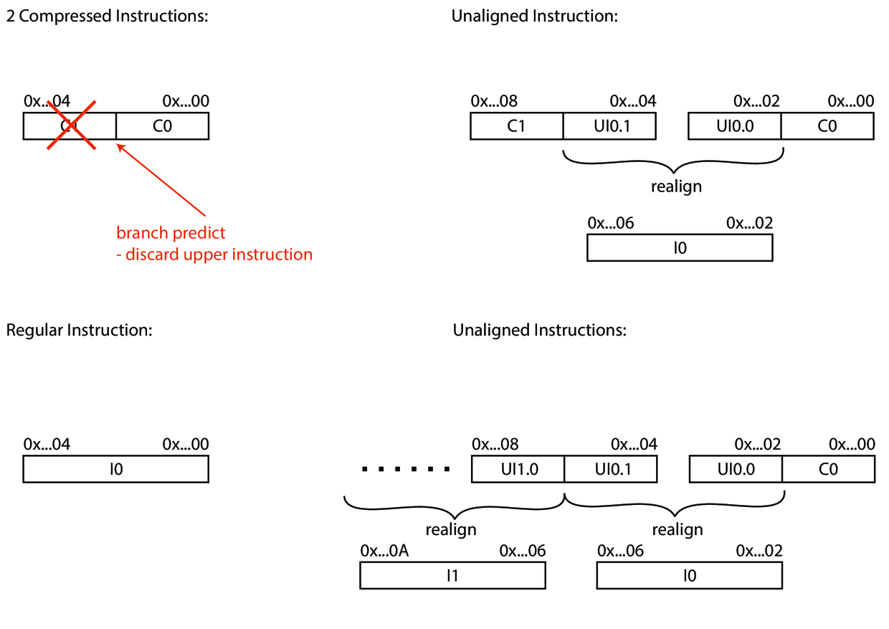

Instruction Decode
Instruction decode is the first pipeline stage of the processor’s back-end. Its main purpose is to distill instructions from the data stream it gets from IF stage, decode them and send them to the issue stage.
With the introduction of compressed instructions (in general variable length instructions) the ID stage gets a little bit more complicated: It has to search the incoming data stream for potential instructions, re-align them and (in the case of compressed instructions) decompress them. Furthermore, as we will know at the end of this stage whether the decoded instruction is branch instruction it passes this information on to the issue stage.
Instruction Re-aligner

As mentioned above the instruction re-aligner checks the incoming data stream for compressed instructions. Compressed instruction have their last bit unequal to 11 while normal 32-bit instructions have their last two bit set to 11. The main complication arises from the fact that a compressed instruction can make a normal instruction unaligned (e.g.: the instruction starts at a half word boundary). This can (in the worst case) mandate two memory accesses before the instruction can be fully decoded. We therefore need to make sure that the fetch FIFO has enough space to keep the second part of the instruction. Therefore the instruction re-aligner needs to keep track of whether the previous instruction was unaligned or compressed to correctly decide what to do with the upcoming instruction.
Furthermore, the branch-prediction information is used to only output the correct instruction to the issue stage. As we only predict on word-aligned PCs the passed on branch prediction information needs to be investigated to rule out which instruction we are actually need, in case there are two instructions (compressed or unaligned) present. This means that we potentially have to discard one of the two instructions (the instruction before the branch target). For that reason the instruction re-aligner also needs to check whether this fetch entry contains a valid and taken branch. Depending on whether it is predicted on the upper 16 bit it has to discard the lower 16 bit accordingly. This process is illustrate in .
Compressed Decoder
As mentioned earlier we also need to decompress all the compressed instructions. This is done by a small combinatorial circuit which takes a 16-bit compressed instruction and expands it to its 32-bit equivalent. All compressed instructions have a 32-bit equivalent.
Decoder
The decoder either takes the raw instruction data or the uncompressed equivalent of the 16-bit instruction and decodes them accordingly. It transforms the raw bits to the most fundamental control structure in Ariane, a scoreboard entry:
PC: PC of instruction
FU: functional unit to use
OP: operation to perform in each functional unit
RS1: register source address 1
RS2: register source address 2
RD: register destination address
Result: for unfinished instructions this field also holds the immediate
Valid: is the result valid
Use I Immediate: should we use the immediate as operand b?
Use Z Immediate: use zimm as operand a
Use PC: set if we need to use the PC as operand a, PC from exception
Exception: exception has occurred
Branch predict: branch predict scoreboard data structure
Is compressed: signals a compressed instructions, we need this information at the commit stage if we want jump accordingly e.g.:
+4,+2
It gets incrementally processed further down the pipeline. The
scoreboard entry controls operand selection, dispatch and the execution.
Furthermore it contains an exception entry which strongly ties the
particular instruction to its potential exception. As the first time an
exception could have occurred was already in the IF stage the decoder
also makes sure that this exception finds its way into the scoreboard
entry. A potential illegal instruction exception can occur during
decoding. If this is the case and no previous exception has happened the
decoder will set the corresponding exceptions field along with the
faulting bits (in [s|m]tval). As this is not the only point in which
illegal instruction exception can happen and an illegal instruction
exception always asks for the faulting address in the [s|m]tval field
this field gets set here anyway. But only if instruction fetch didn’t
throw an exception for this instruction yet.